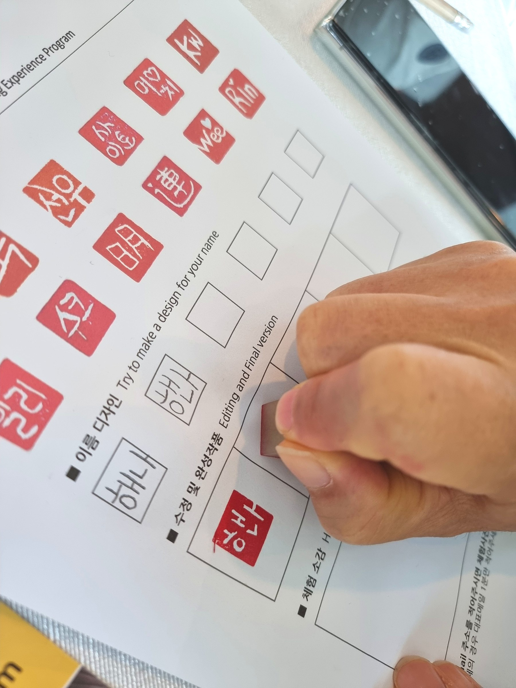
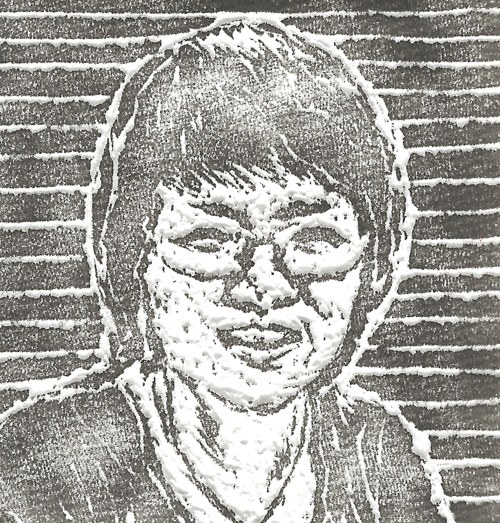
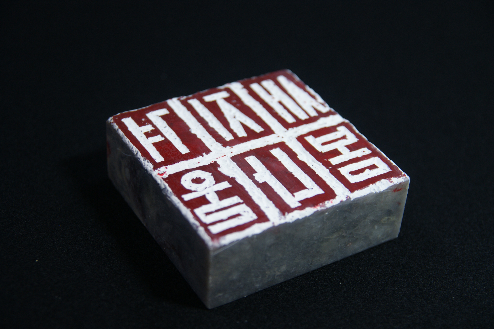
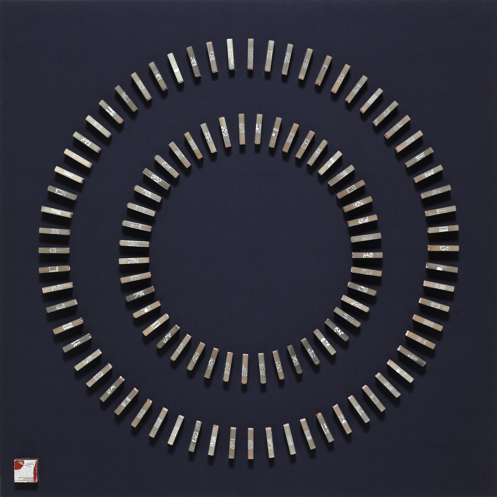
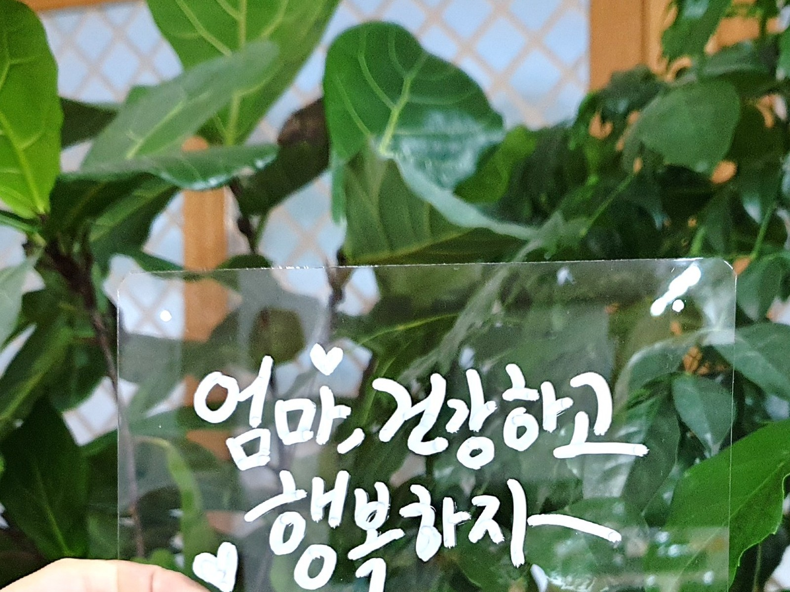
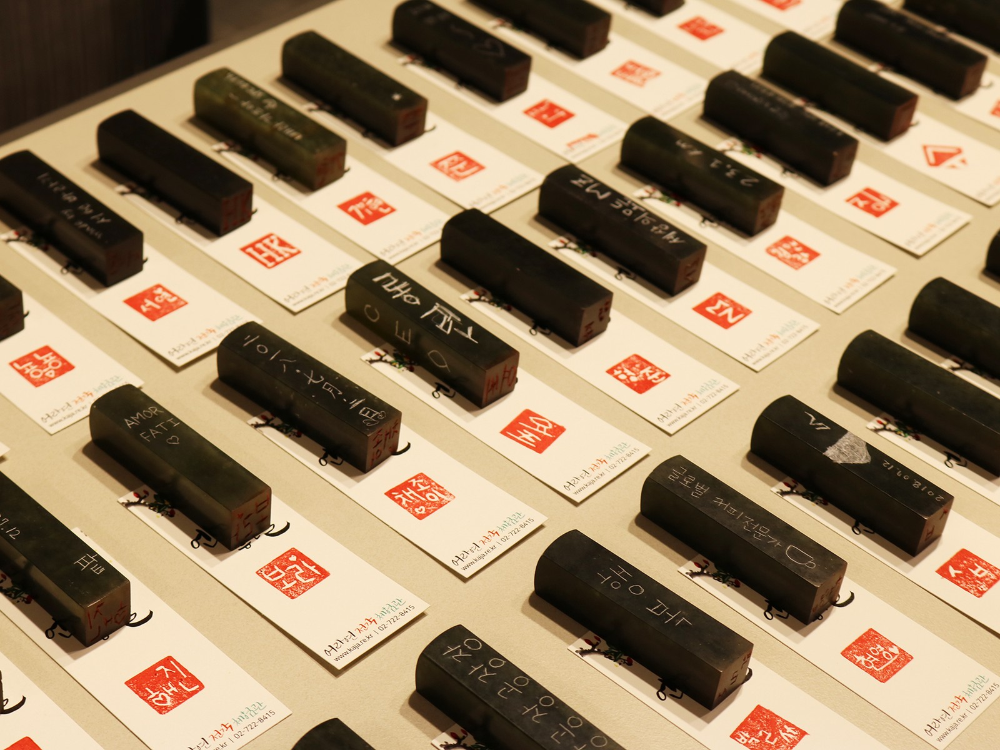
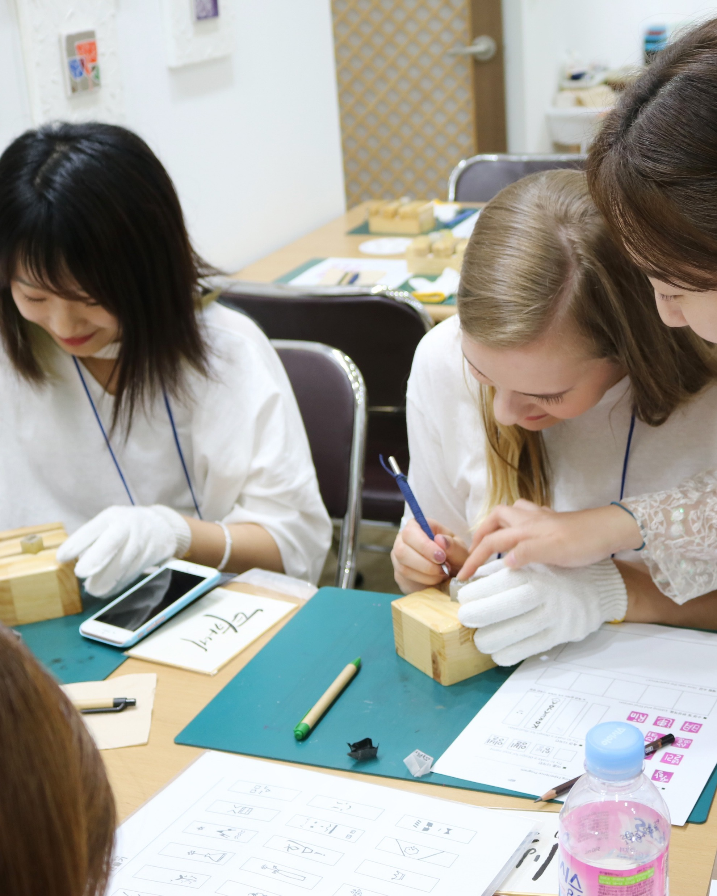
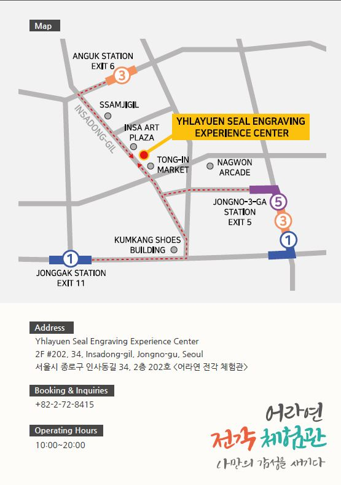

50분-1시간
수제 이름도장 체험
천연석, 도장 주머니, 책갈피가 포함된 초보자 친화 프로그램입니다.
Korean Seal Engraving · Insadong Seoul
Yhlayuen Experience
About
어라연 김현숙은 동양미학을 바탕으로 전각을 연구하고, 전각의 조형 언어를 회화와 한글, 설치, 교육, 문화체험으로 확장해온 작가이자 교육자입니다. Yhlayuen Kim Hyun-sook studies seal engraving through Eastern aesthetics and has expanded its visual language into painting, Hangul, installation, education and cultural programs.
구체적인 약력 보기 View detailed profile
Insadong Studio
돌의 질감, 인장의 붉은 흔적, 한글의 선을 차분하게 보여줍니다. 전통을 크게 장식하지 않고, 조용한 공간감과 작품의 물성으로 전달합니다. Stone texture, red seal impressions and the lines of Hangul are presented with restraint. Tradition is carried through atmosphere, material and the calm presence of the work.
Works
전각의 표면, 새김의 깊이, 붉은 인영의 밀도를 중심으로 작품 세계를 보여줍니다. The archive focuses on surface, depth of carving and the density of red seal impressions.


Experience
인사동 체험관에서는 여행객은 물론 학생·기업·기관 단체가 수제 이름도장과 한글 캘리그라피 굿즈를 직접 완성해 가져갑니다. At the Insadong Experience Center, travelers, students, companies and institutions create personal seals and Hangul calligraphy goods to take home.

천연석, 도장 주머니, 책갈피가 포함된 초보자 친화 프로그램입니다.

엽서, 휴대용 손선풍기, 파우치, 미니 장식 조명, 텀블러, 에코백, 수제 노트 등에 한글 문구를 담습니다.

국내외 학생·기업·기관·여행·MICE 단체에 맞춰 진행합니다.
Lab & Experience Center
전각 작품 연구, 교육, 전시 아카이브의 기반이 되는 작가의 연구소입니다. The artist's base for seal engraving research, education and exhibition archives.
개인과 단체가 수제 이름도장과 한글 캘리그라피 굿즈를 만드는 인사동 체험 공간입니다. An Insadong studio where individuals and groups make personal seals and Hangul calligraphy goods.

Global
어라연은 전각을 작품으로 보여주는 데서 멈추지 않고, 해외 문화원과 국제 관광 행사에서 직접 새기고 가져가는 한국 문화 경험으로 소개해왔습니다. Yhlayuen presents seal engraving not only as artwork, but as a hands-on Korean cultural experience for cultural centers, tourism events and international visitors.
Visit
2F #202, 34, Insadong-gil, Jongno-gu, Seoul
서울시 종로구 인사동길 34, 2층 202호
